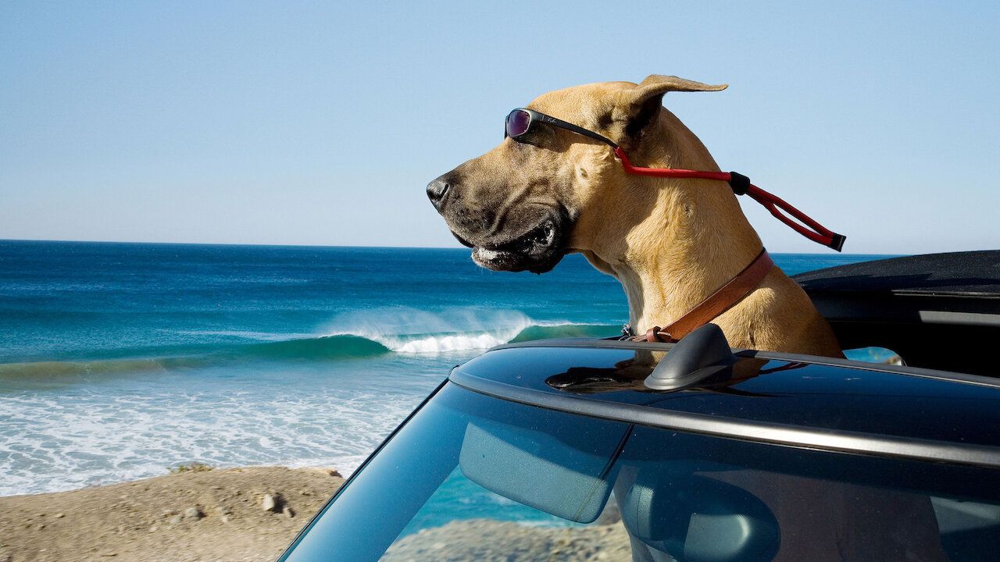

Candy

Candy was Queen Elizabeth's longest living dog companion. Candy was a mix between dashound and welsh corgi. She sadly passed just one week before Queen Elizabeth's passing at 18 years old, but she stood firmly by the queens side during her royal life.
Candy was one of the many Pembrooke Welsh Corgi's to accompany Queen Elizabeth during her reign. Queen Elizabath was known for loving corgis and had two by her side as she passed. Those two, Sandy and Muick, were passed down to the Duke and Duchess of York after the queen's passing.
Photo Gallery


Likes
- Fresh sheets
- Strolls around Buckingham Palace
- Food prepared by royal chefs
Bacon Q Dog

Bacon Q. Dog is a 9yr old labradoodle. He prefers to spend his days lounging among the three different beds/couches that his family has gifted him. He enjoys a walk or two around the neighborhood, as long as he can pretend that he doesn't see any of the other animals to avoid the embarrassment of not wanting to admit he has no wolf-like skills in chasing them.
At night just as the rest of the family is ready to relax, Bacon suddenly wants to release all of his energy. He will place his toys on a mini couch and frantically drag the couch around, giving his toys "a ride." There is also a lot of rolling. Lots and lots of rolling.
Photo Gallery


Likes
- Belly rubs
- Playing tug-of-war
- Sneaking onto the couch
Marmaduke
Marmaduke is a Great Dane, living in rural Kansas with his best friend Carlos
Messy and mischievous Marmaduke has a big heart but can't stay out of trouble!
Photo Gallery
Likes
- Getting into trouble
- Dog parks
- Being with his family
Beethoven
Beethoven is a large happy Saint Bernard who has a loving family
His big size gets him into trouble sometimes!
Photo Gallery
Likes
- Lazing around
- Eating big meals
- Hanging with siblings
Toto
Toto is a loyal puppy who likes to go on adventures with Dorothy.
Toto and Dorothy get swept up in a tornado and go on a crazy adventure to find their way back home.
Photo Gallery

Likes
- Dorothy
- Sitting in baskets
- Being home in Kansas